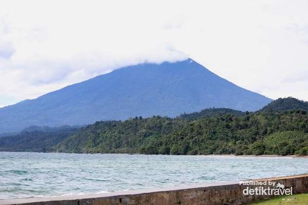

Lampung memiliki banyak tempat wisata yang indah, terutama keindahan pantainya. Pantai menjadi tempat wisata di Lampung yang wajib dikunjungi dan banyak dicari. Letak provinsi Lampung yang berada di ujung pulau Sumatera ini memang menyimpan pantai-pantai yang masih terjaga asri.
Beberapa tahun ke belakang pantai di Lampung menjadi tempat wisata favorit warga Jakarta dan sekitarnya. Selain terbilang cukup dekat dengan Jakarta, harga berwisata ke pantai-pantai di Lampung tidak begitu mahal. Kamu yang tertarik mengunjungi Lampu bisa mencoba datang ke 12 pantai cantik ini!
Pulau Balak
Pulau Balak yang terletak di Kabupaten Pesawaran, Lampung ini mungkin belum seterkenal Pulau Pahawang. Keindahan alam Pulau Balak tak kalah dengan keindahan pantai yang ada di Pulau Pahawang. Tempat wisata di Lampung ini juga terbilang unik karena panorama pantainnya yang berbeda dengan pantai di lampung lainnya.
Objek wisata di Lampung yang satu ini akan membuatmu terpesona. Perpaduan antara bebatuan padas dan hamparan pasir putih ini memang sangat unik. Pantai berpasir putih ini begitu cantik berpadu dengan air laut yang berwarna biru dan toska. Air di sekitar Pulau Balak cukup tenang sehingga kamu bisa bebas bermain air sepuasnya. Keindahan alam bawah laut di Pulau Balak masih sangat terjaga.
Pantai Gigi Hiu
Jangan kaget dengan nama pantai yang satu ini. Pantai Gigi Hiu tak semenyeramkan hewan laut yang terkenal ganas. Pantai yang menjadi tempat wisata di Bandar Lampung ini menyimpan panorama yang unik.
Pantai bebatuan yang terletak di Kecamatan Kelumbayan ini sangat menarik. Daya tarik dari objek wisata ini adalah bebatuan yang bentuknya mirip dengan gigi hiu. Batu-batu karang yang berjejer tinggi kalau diperhatikan memang sangat mirip dengan gigi hiu. Di sini juga ada sebuah tebing yang bentuknya benar-benar menyerupai gigi hiu.
Pulau Pahawang
Pulau Pahawang Lampung beberapa tahin kebelakang menjadi tempat wisata favorit warga Jakarta. Keindahan pantainya plus jarak tempuhnya yang tidak terlalu lama menjadikan Pulau Pahawang menjadi destinasi wisata favorit.
Menyelami keindahan Pantai Pahawang, Bandar Lampung bisa membuat stress hilang. Kamu bisa menikmati keindahan alam bawah laut Pulau Pahawang dengan meminjam alat snorkeling dengan biaya Rp 50.000 sampai Rp 100.000.
Teluk Kilauan
Sama seperti Pulau Pahawang, Teluk Kiluan juga menjadi salah satu objew wisata di Lampung yang terkenal. Berbeda dengan keindahan alam di pantai kebanyakan, Teluk Kiluan mempunyai objek wisata lain yang tak kalah menarik.
Di sini kamu bisa menyaksikan iring-iringan lumba-lumba yang akan membuat liburanmu menjadi lebih berkesan. Untuk bisa menyaksikan lumba-lumba kamu harus menyewa perahu dengan tarif Rp 300-Rp 500 ribu.